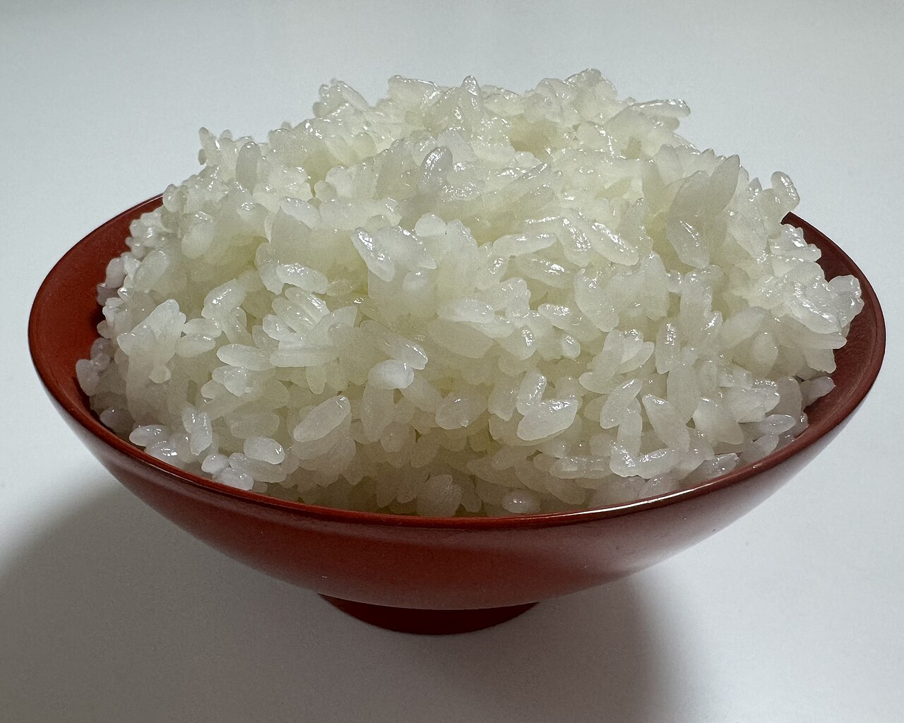
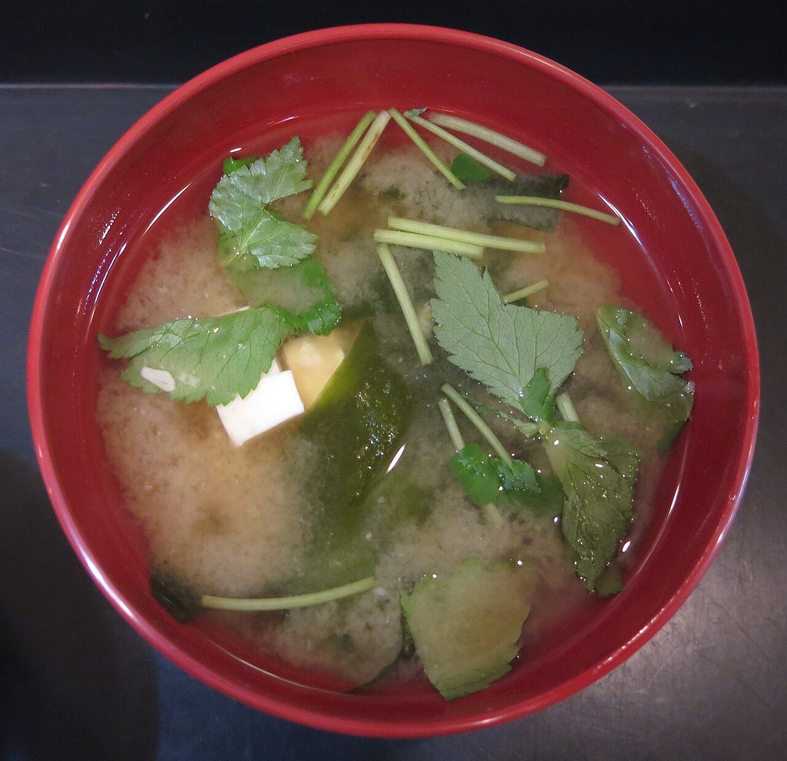
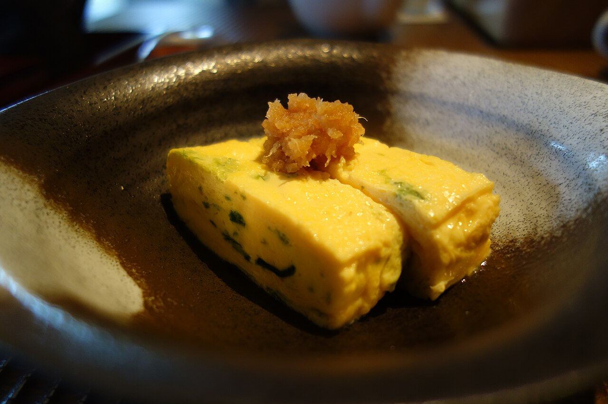
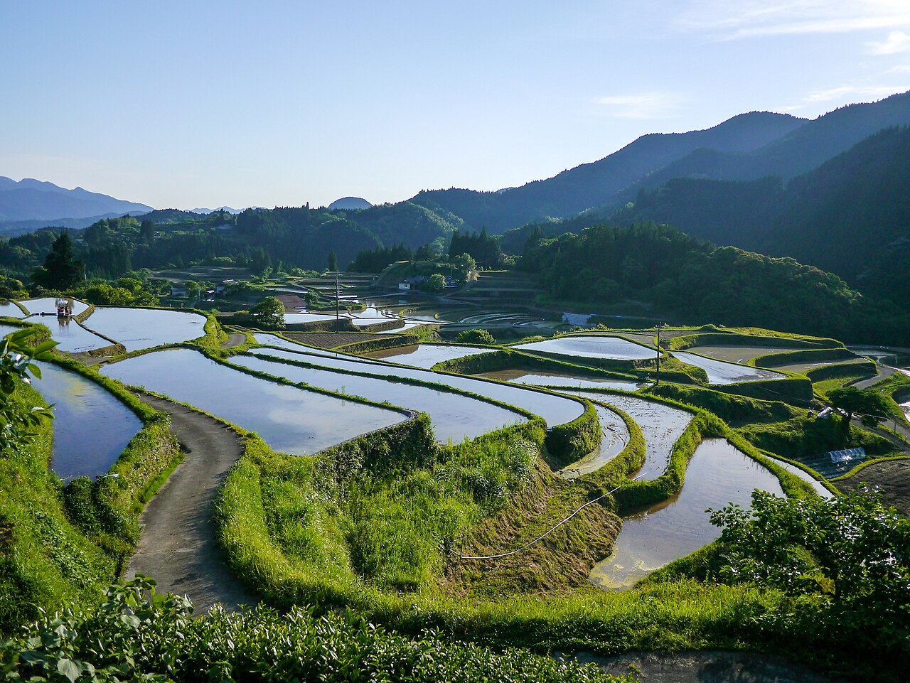
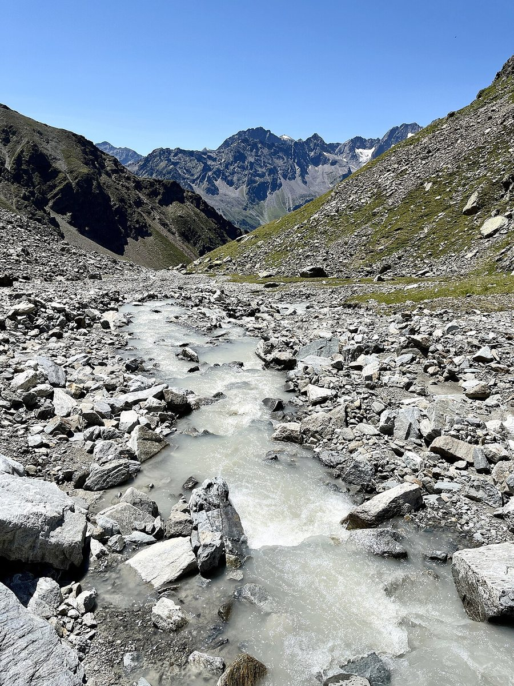
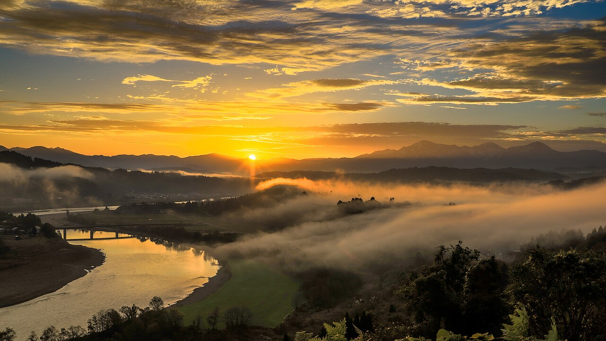
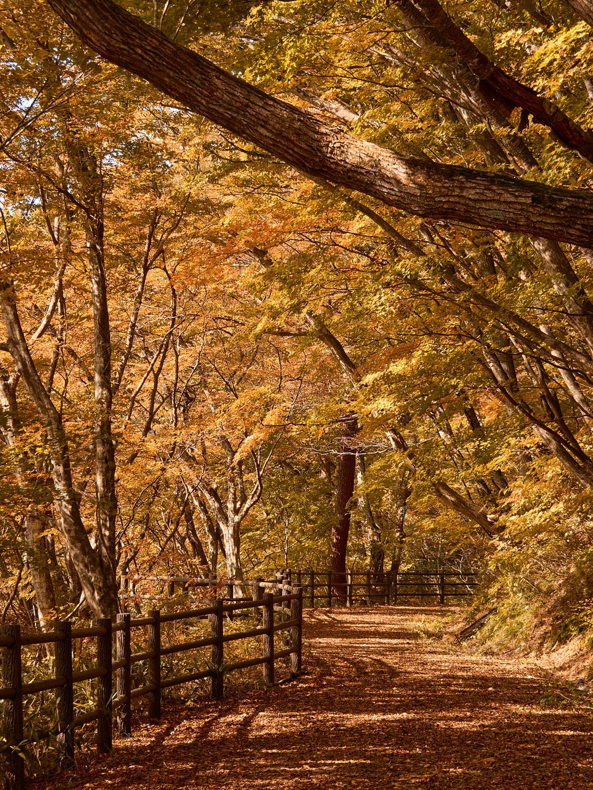
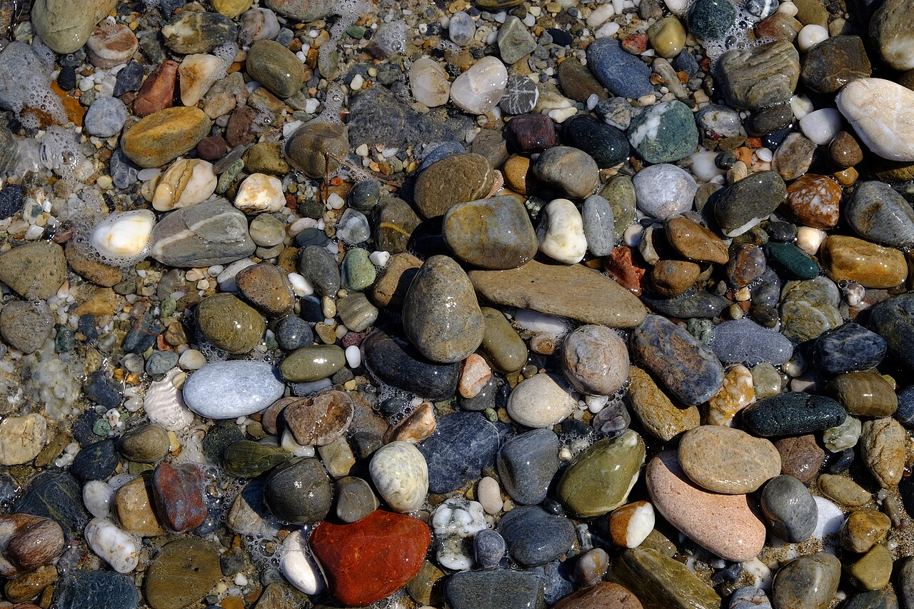
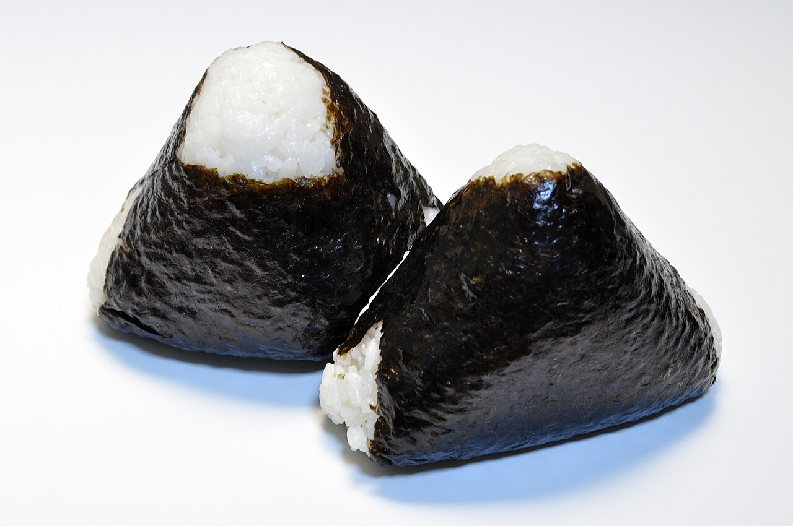
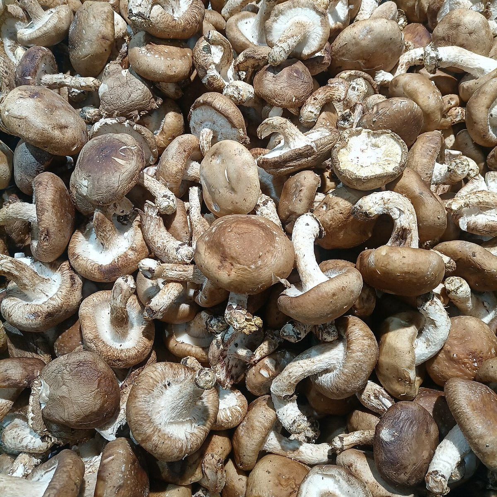

NABARI, MIE / KOUNODAI
みゆキッチンMIYU KITCHEN
三重県名張市・鴻之台にある飲食店です。「みゆキッチン」という屋号のやわらかな響きから、家の台所のようなぬくもりをこのサンプルのデザインに映しました。
お品書きや営業時間は、お店に確認してから掲載します。いまは準備中です。



写真はイメージです(他地域・撮影地不明を含みます)
いま分かっていること
確認できた情報だけを載せています。それ以外は「準備中」とし、お店に確認してから掲載します。
- お店の名前
- Miyu Kitchen（みゆキッチン）
- 所在地
- 〒518-0704 三重県名張市鴻之台4番町52番1
- 電話
- 0595-51-8400
- @_miyu_kitchen
- 営業時間・定休日
- 準備中
- お品書き・料金
- 準備中
- ご予約
- 準備中
名張のまちの景色から
名張市は、赤目四十八滝の渓谷や、忍者ゆかりの里として知られる三重県西部のまちです。山や水、田んぼのある景色を、イメージとして並べました。





台所のぬくもりを、デザインで
お店の料理を紹介するものではなく、屋号から受ける印象をふくらませた、デザイン上のイメージです。

デザインのイメージ
手のひらで、ほっとする。
家で食べるごはんのように、肩の力が抜けるやさしい雰囲気を、丸みのある文字と黄色のあたたかさで表しました。

デザインのイメージ
季節のものを、台所へ。
山の多い名張らしい、きのこや根菜のような身近な素材の落ち着いた色合いを、背景の白磁色と深い鍋墨色に重ねています。